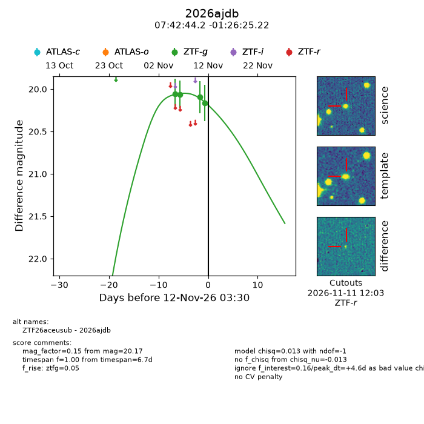
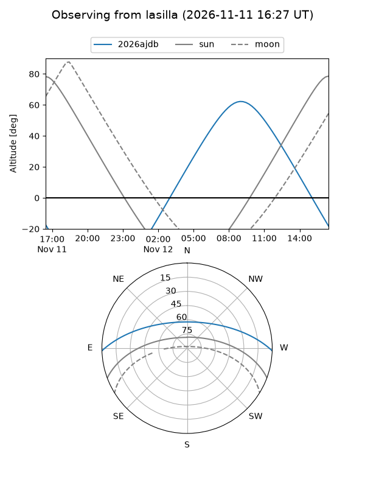
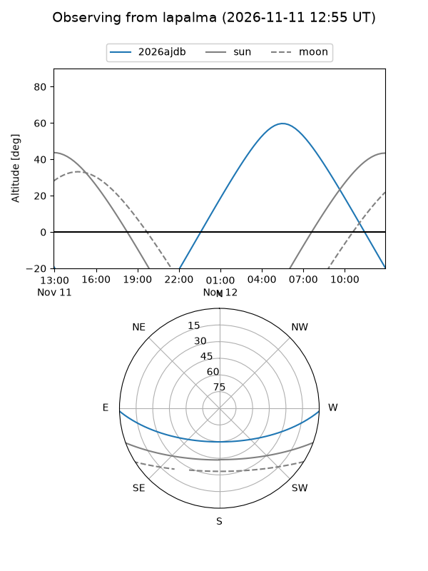
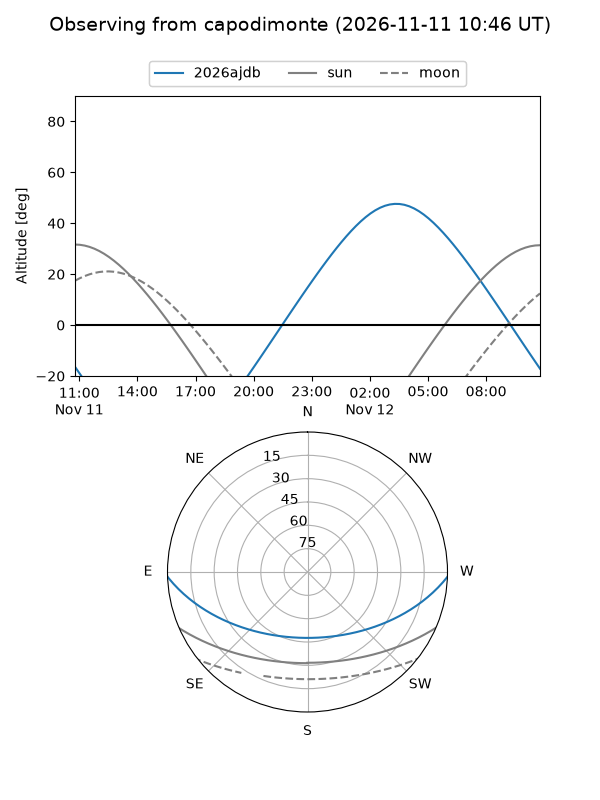
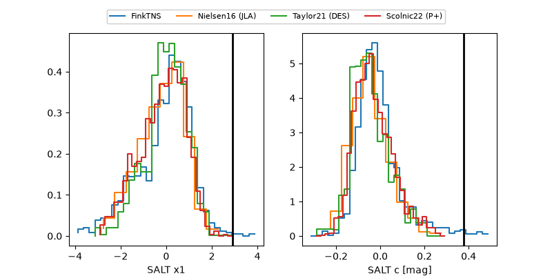

2026ajdb
Target 2026ajdb at 2026-11-12 03:32
Aliases and brokers:
FINK-ZTF: ztf.fink-portal.org/ZTF26aceusub
Lasair-ZTF: lasair-ztf.lsst.ac.uk/objects/ZTF26aceusub
ALeRCE-ZTF: alerce.online/object/ZTF26aceusub
YSE-PZ: ziggy.ucolick.org/yse/transient_detail/2026ajdb
TNS name: wis-tns.org/object/2026ajdb
Direct TNS query: direct search
alt names
ZTF26aceusub (ztf,fink_ztf)
2026ajdb (tns,yse)
Coordinates:
equatorial (ra, dec) = 115.6841,-1.44034
equatorial (HMS+DMS) = 07:42:44.18,-01:26:25.22
galactic (l, b) = (220.1558,+10.72085)
Flags:
peak dt: +4.6
Photometry:
last ztfg=20.17
4 ztfg detections
Lightcurve

Visibility



Additional plots
